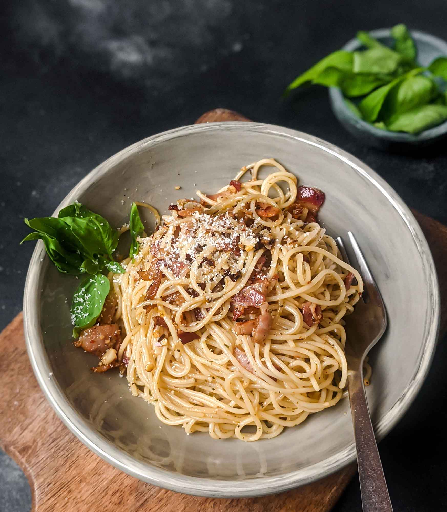

Return
Nathan's Fuck You Pasta

This is chef Nathan Rothenbaum's modern twist on a classic take! Fuck You Pasta combines the best features of Spaghetti Aglio e Olio and Spaghetti Carbonara into a flavor sensation! If you can cook spaghetti carbonara, and you can cook Aglio e Olio then you will postiviely love this dish! It's creamy, flavorful, and just perfect.
You will need:
- 300g of spaghetti
- 50g of Pancetta or a Diced Bacon
- 3 Eggs
- One whole clove of garlic
- One lemon
- Sprig of italian parsley
- 1 cup Freshly grated parmesan reggiano
- Black pepper
- Cayenne / Spicy pepper
- Red pepper flakes
- MSG
- Salt
- Olive Oil
Buckle up! Its About to get Wild!
Lets get cookin!
- Start by rendering the pancetta or the diced bacon in a small sauce pan over medium-low heat. We are looking for a couple steps away from crisp, but not chewy. We wanna get the fat off the pork.
- When the bacon/pancetta is cooked, use a strainer to move it out and seperate it. Depending on how fat your pancetta was there should be some bacon grease in the pain
- Crack 1 egg into a bowl. Then seperate the yolks from 2 other eggs, adding them to the same bowl. Whisk the mixture. Add parmesan reggiano until the its a goopy paste. Then add a lot of fresh cracked pepper into the mixture - it should look speckled!
- Start a pot of water and get it well salted. Bring it to a boil and add the spaghetti.
- While the spaghetti cooks, dice a whole clove of garlic and add it to the rendered pork fat. Spread the garlic out, top the mixture off with olive oil to lightly cover the garlic if there isn't enough fat
- When the garlic shimmers (2-3 minutes), wait until it softens and begins to stick to a wooden spoon. Then, take it off the heat and 1-2TBsps of red pepper flakes (depending on your spice tolerance)
- Drain the pasta, saving a cup of pasta water for emulsion later. Then, readd the pasta to the hot. Quickly pour the yolk/cheese mixture made early into the pot and stir constantly. The heat of the pasta will cook the mixture into a creamy sauce. If the sauce isn't slick enough, consider adding some of the reserved pasta water a little at a time. You will want it to be more on the thick-side than the creamy side (it will get more creamy later)
- Add the oil / red pepper / garlic mixture to the pot, stir again.
- Add freshly chopped parsley - add more than you think you need!
- Juice half a lemon into the pasta
- Add the pork
- Taste! I reccomend hitting it with some cayenne to increase the heat, and some MSG / Salt to taste
- Plate, sprinkle with more parmesan
Enjoy!
Return